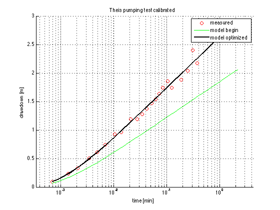

Contents
- modelScript 5 Simple calibration
- Fixed data
- Initial trial parameters
- New data for this example
- Load data
- Initial parameter mutiplyers, first for T, second for S
- Final parameter multiplyers after calibration
- Final parameters:
- Suitable time vector to simulate model
- Model in shape of anonymous function forTheis drawdown
- Visualize output
- Default axis parameters
- Figure setup
modelScript 5 Simple calibration
Demo of a simple calibration using lsqnonlin in Matlab
We simulate an artificial pumping test to be analyzes using the Theis drawdown formula. Drawdowns are generated using some unknown values transmissivity T and storativity S in the eMeasNew function and adding some random measurment errors. Then the calibration starts with iniital values T0 and S0. The calibration optimizes the multiplyers p. When done the data are plotted with markers and the theis formulat is plotted using the original values for the transmissivity (green line) and the final ones (thick black).
TO 140419
global eMeas Q T0 S0 r
Fixed data
Q = 1200; % [m3/d] r = 30; % [ m ]
Initial trial parameters
T0 = 350; % [m2/d] S0 = 0.001; % [ - ]
New data for this example
eMeasNew(Q,r,T0,S0);
Load data
load eMeas; % eMeas(:,1) is time and eMeas(:,2) are drawdowns
Initial parameter mutiplyers, first for T, second for S
p = ones(2,1);
Final parameter multiplyers after calibration
p = lsqnonlin(@FUN,p);
..................... Local minimum found. Optimization completed because the size of the gradient is less than the default value of the function tolerance.
Final parameters:
T = exp(p(1))*T0; S = exp(p(2))*S0;
Suitable time vector to simulate model
t =logspace(log10(eMeas(1)),log10(eMeas(end)),30);
Model in shape of anonymous function forTheis drawdown
Theis = @(t,T,S) Q/(4*pi*T) * expint(r^2*S./(4*T*t));
Visualize output
Default axis parameters
defaults={'xScale','log','yScale','lin','xGrid','on','yGrid','on','xLim',[t(1)/2 2*t(end)]};
Figure setup
figure; axes('nextplot','add',defaults{:}); xlabel('time [min]'); ylabel('drawdown [m]'); title('Theis pumping test calibrated'); % Plot plot(eMeas(:,1),eMeas(:,2),'ro'); % measurements plot(t, Theis(t,T0,S0),'g','lineWidth',1); % model with initial paramters plot(t, Theis(t,T, S ),'k','lineWidth',2); % model with final parameters legend('measured','model begin','model optimized');